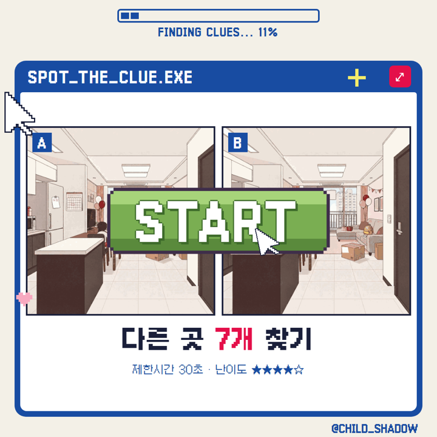
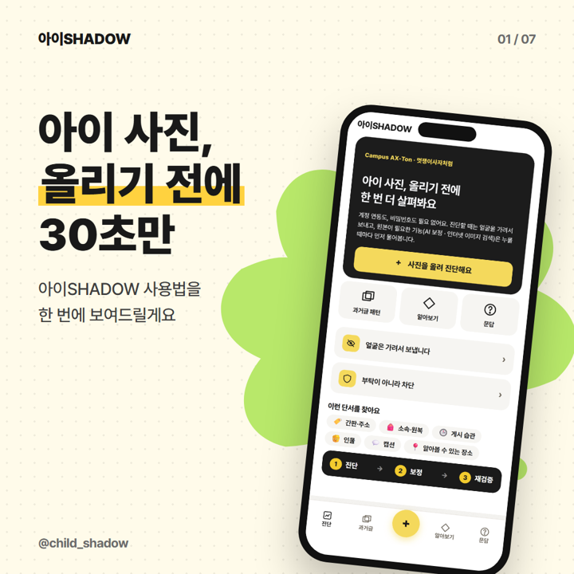

1
«문자 반전»모르는 사람이 아이 어린이집을 알고 문자를 보냄
→ 사진 한 장으로 당할 수 있는 일을 느낌
마케팅 · 실제로 해 본 것
모르는 사람이 아이 어린이집을 알고 문자를 보냄
→ 사진 한 장으로 당할 수 있는 일을 느낌

사진 두 장에서 다른 곳 7개 찾기
→ 내 사진에도 단서가 있다는 걸 직접 찾아봄

올리기 전에 앱으로 확인하는 법
→ 그래서 이 앱이 필요하다
8개인스타 @child_shadow 게시물 (11월~)
17/18명"생각 못 한 위험을 알게 됐다" (지인)
웹 무료 체험 8.26 배포 · 11.2 재배포